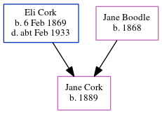

Jane Cork 1889 -
[ Home ] | [ Calendar ] | [ Surnames Index ] | [ Census Index ] | [ Family History ]The child of Eli Cork (a laborer on a farm) and Jane Boodle, Jane Cork, the second cousin twice-removed on the mother's side of Nigel Horne, was born in Whitstable, Kent, England in 18891.
During her life, she was living at Plough Row, Harbledown, Kent, England on Apr 5, 18912 and on Mar 31, 19011.
Parents
- Eli George was born on Feb 6, 1869
- Jane was born in 1868
Citations
- 1901 England, Wales & Scotland Census - Findmypast (was age 12 and the daughter of the head of the household)
- 1891 England, Wales & Scotland Census - Findmypast (was age 2 and the daughter of the head of the household)
Media
1891 England, Wales & Scotland Census - GBC/1891/0005722680
Family Tree
Generated by ged2site. Last updated on Jun 11, 2024